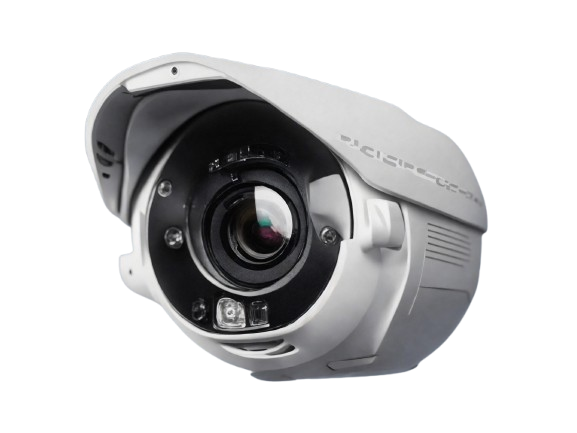

Dlouholeté zkušenosti
OKO působí na trhu od roku 1996, BOS-PCO od roku 2005. Kombinujeme tradici s moderními technologiemi.

Dvě specializované divize poskytující profesionální služby v oblasti technického a fyzického zabezpečení majetku a osob. Spolehlivost, profesionalita a dlouholeté zkušenosti.

OKO působí na trhu od roku 1996, BOS-PCO od roku 2005. Kombinujeme tradici s moderními technologiemi.
Od technického zabezpečení přes montáže až po fyzickou ochranu. Vše z jedné ruky, sjednocený přístup a koordinace.
Působíme v regionu Chrudim a okolí. Rychlá dostupnost, osobní přístup a znalost místních podmínek.
Prověření pracovníci s potřebnými licencemi a certifikáty. Pravidelná školení a dodržování nejvyšších standardů.
Naši klienti oceňují profesionalitu, spolehlivost a individuální přístup. Zde jsou některé z jejich hodnocení.
"Spolupracujeme s BOS-PCO již několik let a jsme velmi spokojeni. Profesionální přístup, spolehlivá služba a rychlá reakce na naše požadavky. Doporučujeme."
"OKO nám nainstalovalo zabezpečovací systém a pravidelně provádí servis. Vše funguje bez problémů, technici jsou vždy ochotní a profesionální. Skvělá spolupráce."
"Fyzická ostraha našich objektů je na vysoké úrovni. Stráže jsou spolehlivé, komunikace s pultem centrální ochrany funguje bezchybně. Cítíme se bezpečně."
Ing. Vojtěch Jíra
Náměstí čp. 6
538 51 Chrast u Chrudimi
Tel: +420 469 666 854
Email: jira@bos-pco.cz